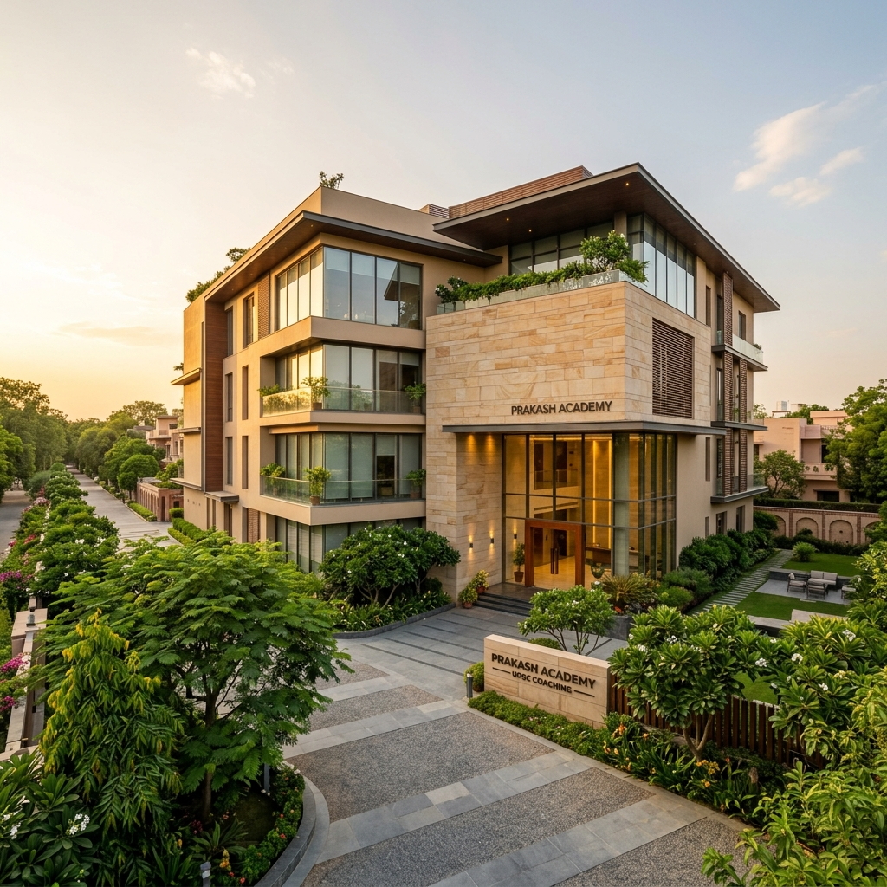

From a single classroom in Delhi to India's most trusted UPSC coaching platform — the Ravindra IAS story is one of commitment, purpose and results.

Founded in 2004 by Dr. Ravindra Singh (IAS, 1998 batch), our academy was born from a simple belief: every aspirant deserves access to world-class UPSC guidance regardless of their background.
What started as a small study group in Old Rajinder Nagar has grown into a 500-seat physical campus and a digital platform serving aspirants across 28 states.
Dr. Ravindra Singh served in the Indian Administrative Service for 28 years, holding positions including District Collector, Secretary to Government, and Director of Public Administration. After retiring, he dedicated himself to training the next generation.
His teaching philosophy is simple: understand concepts deeply, practice relentlessly, and always connect your answers to ground reality. Under his leadership, Ravindra IAS has produced 5000+ selections including multiple top-20 rankers.
"Civil services is not just a career — it's a calling. My goal is to prepare officers who are not just exam-ready, but governance-ready."